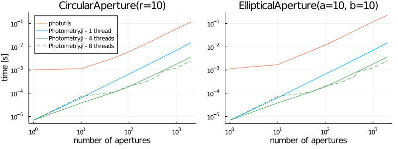

Aperture Photometry
Introduction
Aperture photometry uses Apertures to cut out and sum values in an image. A very basic mask might be a square of pixels at a certain position. We can model this as a matrix of ones and zeros like
[0 0 0 0 0
0 1 1 1 0
0 1 1 1 0
0 1 1 1 0
0 0 0 0 0]If we have some data like
[7 9 6 0 8
8 5 8 7 9
5 6 2 2 7
9 7 3 4 1
7 8 0 9 8]then the result of our aperture photometry looks like
[0 0 0 0 0 [7 9 6 0 8 [0 0 0 0 0
0 1 1 1 0 8 5 8 7 9 0 5 8 7 0
0 1 1 1 0 .* 5 6 2 2 7 = 0 6 2 2 0
0 1 1 1 0 9 7 3 4 1 0 7 3 4 0
0 0 0 0 0] 7 8 0 9 8] 0 0 0 0 0]
sum(result) = 44This module uses the above principal with common aperture shapes in a fast and precise manner, including exact overlaps between apertures and pixels.
The majority of the lifting is done with the photometry function with common shapes being described in Apertures. It is possible to create a custom aperture by sub-typing the Aperture.AbstractAperture class, although it may be easier to perform PSF photometry instead.
Pixel Convention
Photometry.jl follows the same convention as FITS, WCS, IRAF, DS9, and SourceExtractor with (1, 1) being the center on the bottom-left pixel. This means the exact bottom-left corner is at (0.5, 0.5). Pixels increase up and to the right until axis_length + 0.5.
API/Reference
Photometry.Aperture.photometry — Functionphotometry(::AbstractAperture, data::AbstractMatrix, [error])
photometry(::AbstractVector{<:AbstractAperture}, data::AbstractMatrix, [error])Perform aperture photometry on data given aperture(s). If error (the pixel-wise standard deviation) is provided, will calculate sum error. If a list of apertures is provided the output will be a TypedTables.Table, otherwise a NamedTuple.
This code is automatically multi-threaded. To take advantage of this please make sure JULIA_NUM_THREADS is set before starting your runtime.
Performance
Below are some benchmarks comparing the aperture photometry capabilities of Photometry.jl with the photutils asropy package. The benchmark code can be found in the bench folder. Note that for the multi-threaded examples my machine has 4 physical cores with 8 threads.
julia> versioninfo()
Julia Version 1.5.0
Commit 96786e22cc (2020-08-01 23:44 UTC)
Platform Info:
OS: macOS (x86_64-apple-darwin18.7.0)
CPU: Intel(R) Core(TM) i5-8259U CPU @ 2.30GHz
WORD_SIZE: 64
LIBM: libopenlibm
LLVM: libLLVM-9.0.1 (ORCJIT, skylake)Number of Apertures
This benchmark shows how performance scales as we increase the number of apertures. The apertures are distributed randomly across the image with a fixed radius of 10. The image size is (512, 512). We see an improvement of ~10-100x (depending on multithreading) over photutils.

Size of Apertures
This benchmark analyzes how the aperture size affects performance. Theoretically it should increase with O(n^2) complexity. For aperture sizes increasing from 1 to 200, located in the center of a an image of size (512, 512).